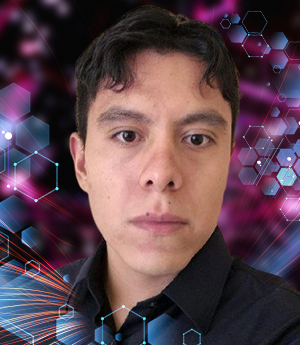

Alejandro Monroy Azpeitia
CIC-IPN
Variational Quantum Eigensolver for Molecular Electronic Structure Calculations
October 15, 2026 · 10:00 · Virtual · Presentation
About the Speaker
Data Scientist and an M.Sc. student in Computer Science at CIC-IPN, holding a B.Sc. in Physics and Mathematics from ESFM-IPN. My academic work focuses on Quantum Machine Learning (QML). I currently research Quantum Convolutional Neural Networks (QCNN) and have practical experience analyzing circuits for Quantum Support Vector Machines (QSVM).
I am the principal author of the book chapter Supervised Quantum Machine Learning, published by Springer. Alongside my research, I have designed curriculum content for undergraduate quantum computing courses, translating complex computational concepts into accessible frameworks for engineering students. I also mentor undergraduates in research initiatives exploring AI and quantum computing.
My scientific contributions have been presented at IEEE Quantum Week in Montreal, as well as at academic conferences at UNAM, ESFM IPN, and CIC IPN.